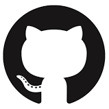

<div class="wrapper wrapper-content animated fadeInRight">
  <div class="row">
    <!-- No tiene canales -->
    <div ng-show="vmc.isEmpty" class="jumbotron text-center">
        <p>No encontramos canales en este proyecto <i class="fa fa-frown-o"></i></p>
        <p>
          <a ng-click="vmc.gotoCreateChannel()" class="btn btn-xl btn-primary">Crear Canal</a>
        </p>
    </div>
    <!-- listado de canales -->
    <div ng-hide="vmc.isEmpty">
      <div class="col-lg-12">
        <div class="ibox float-e-margins">
          <div class="ibox-title">
            <h5>Canales</h5>
          </div>
          <div class="ibox-content">
            <div class="row wrapper border-bottom white-bg page-heading">
              <div class="col-lg-9">
                <ol class="breadcrumb2">
                  <li>
                    <input ng-model="vmc.filterQuery" type="text" placeholder="Filtrar..." class="form-control" name="top-search"/>
                  </li>
                  <li class="buttonRight">
                    <button ui-sref="dashboard.project.channel-create" type="button" name="btnCrearProyecto buttonRight" class="btn btn-primary" style="float:right">Crear Canal</button>
                  </li>
                </ol>
              </div>
            </div>
            <div class="table-responsive">
              <table class="table table-striped">
                <thead>
                  <tr>
                    <th class="columnaCanal">Canal</th>
                    <th class="columnaDescripcion">Descripcion</th>
                    <th class="columnaMiembros">Miembros</th>
                    <th class="columnaIntegraciones">Integraciones</th>
                    <th class="columnaFecha">Fecha Creacion</th>
                    <th class="columnaFecha">Ultimo Mensaje</th>
                  </tr>
                </thead>
                <tbody>
                  <tr style="cursor: pointer;"
                      ng-repeat="channel in vmc.channels | filter:vmc.filterQuery | orderBy:['-state', '-createdAt']"
                      ui-sref="dashboard.project.channel-explore({projectId: vm.project.id, channelId:channel.id})">
                      <td class="columnaCanal">
                        <b>{{channel.name}}</b>
                      </td>
                      <td class="columnaDescripcion">
                        {{channel.description}}
                      </td>
                      <td class="columnaMiembros">
                        <ul>
                          <li ng-repeat="member in channel.members | limitTo: 6">
                            
                          </li>
                          <li ng-show="channel.members.length > 6">
                            <p>+{{channel.members.length - 6 }}</p>
                          </li>
                        </ul>
                      </td>
                      <td class="columnaIntegraciones">
                        <ul>
                        <!--
                          <li>
                            
                          </li>
                          <li>
                            
                          </li>
                        -->
                          <li>
                            
                          </li>
                        </ul>
                      </td>
                      <td class="columnaFecha">{{channel.createdAt | date}}</td>
                      <td class="columnaUltimoMensaje">{{channel.createdAt | date}}</td>
                  </tr>
                </tbody>
              </table>
            </div>
          </div>
        </div>
      </div>
    </div>
  </div>
</div>
